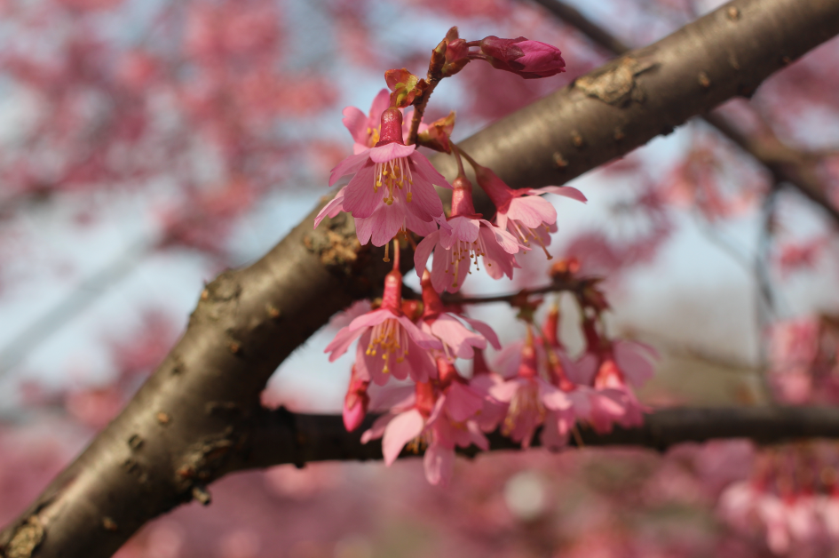
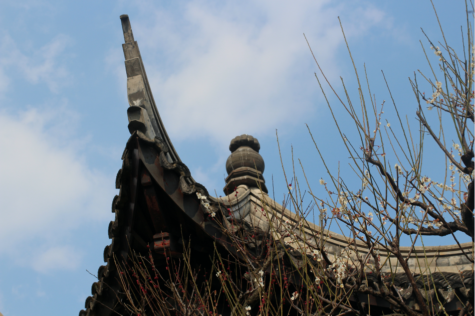
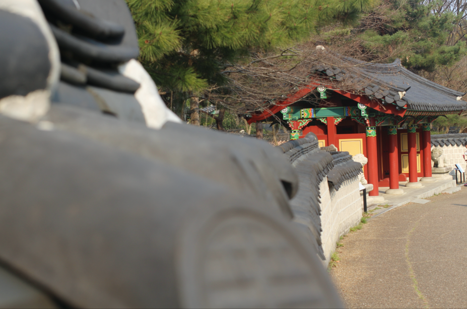
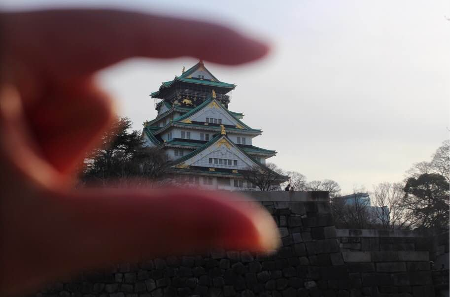
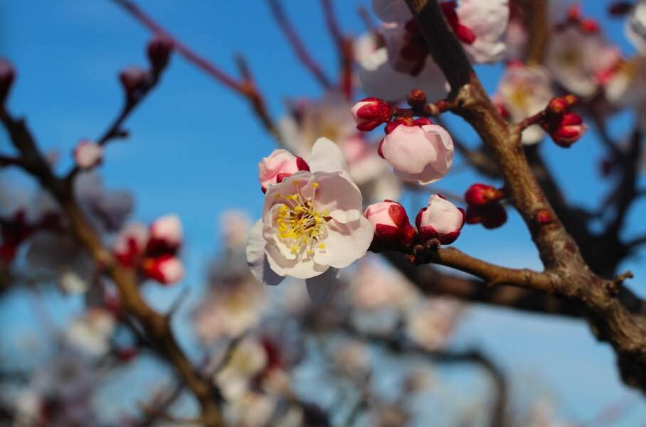

2017/03/19, another sunny> day. After lunch, I decide to have a relex. After searching by Google maps for a few minutes, a Park, Tsurumi Ryokuchi Park as I write the title, makes me instristed. And it's not very long away, only one hour ride by train. So I set off quickly after packaging my Canon 100D. One hour later, precisely 3 o'clock PM, I arrived the Tsurumi Ryoukuchi Park. I felt very excited because I thought the Sakura was open by the fisrt sight. Actually, It's found to be peach flowers. But, still beauful. Here it is. Peach Flowers 01  Peach Flowers 02 Then, after walking around in the Park, I found my building style from all around the world, like China, South Korea, Island, England, and so on.  Chinese Ancient Bulidings  South Korea Style Buildings By waling close to the lake in the centor of park, the beauty of pure yellow rape flowers stopped me. The funny thing is that a big dog party is held there. Those cute things attracted too many fans. I also took some photos of dog party. It looks they really enjoyed the show and became the focus of park. The Dog Party nearby the Lake Flowers Unknown Time really passed fast. Before I realised, it's 5 o'clock PM. As the Park closes in 6 o'clock, I have to walk fast and look for the gate. Just by walking around the lake at the same time, I found some bird were having a nice afternoon swim in the lake. As an old saying in Chinese, the ducks firstly the warmth of spring water. If you don't understand, just see the picture as follow. Birds in Lake
This is the third time that I went to Osaka Castle in 2017/03/05. Although got lost in middle way, I still feel happy and shocked by the beauty the castle gave me. As the actual time is PM 2 o'clock, the light is a little gray. Sorry for that.  Picture 01 At the behind of Castle> Picture 02 In Plum Forest>  Picture 03 Plum Blossom>